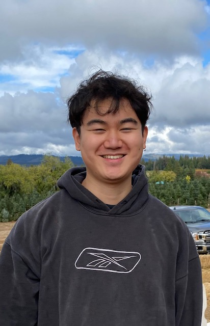

 I am an incoming computer science MS student at UC Davis. I’m currently taking a brief break between working full-time and starting school.
Previously, I worked on cloud storage at eBay. As an undergraduate, I studied computer science at UChicago.
I’m interested in programming languages and formal methods research to improve the quality of software systems and make it easier to develop higher quality software. Software should be more empowering and less frustrating for both developers and users.
I’m primarily interested in applying techniques from programming languages and formal methods to software systems. I’m currently excited about:
More broadly, I want to help move software away from heuristics and hacks and onto more solid, elegant, and principled ground. More specifically, I believe there is a lot of room for mathematical abstractions to give us much better results across the computing stack. As increasingly complex software underpins more and more of our lives, we need better results.
I like reading short stories, writing fiction, and listening to music. I also like long form journalism and literary criticism. At one point, I wanted to be a journalist. At another point, I wanted to be a writer. I generally like a lot of humanities-related things and it’s unfortunate that market forces have deemed most of them to be strictly less valuable than producing software.